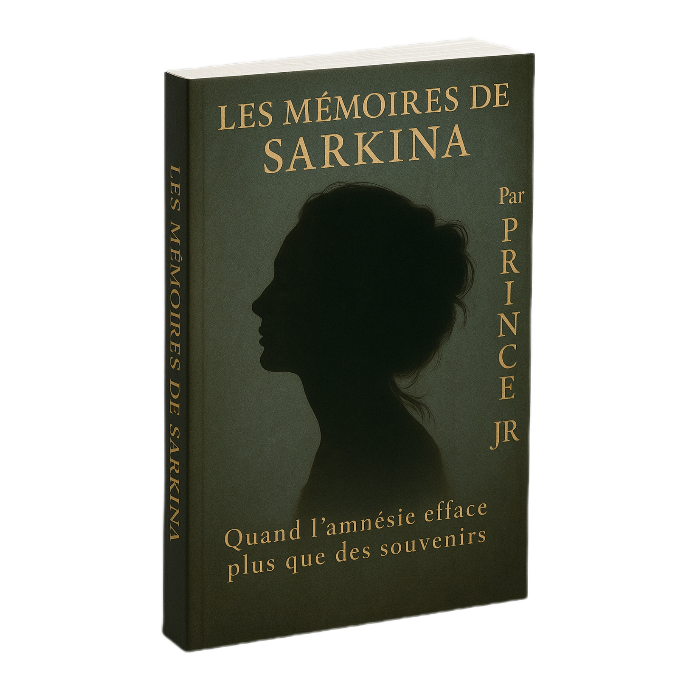

Entre fiction et réalité, j’ai découvert quelques années plus tard que les mots peuvent aussi coder des émotions. Écrire c'est d'abord apprendre à réfléchir aux différents aspects ou situations de notre quotidien qu'ils soient dramatiques ou drôles et de les transformer en mots pour créer une histoire. Je me souviens encore, qu'il y a quelques années, j’ai eu une idée assez folle : écrire un roman. Et à ce moment-là, je n'avais aucune notion en écriture, même si je pouvais avoir l'inspiration, je ne savais pas exactement comment débuter un roman, une introduction ou même d'installer les personnages dans l'histoire, les intégrer dans une scène pour déclencher une action ou même une idée de développement de l'intrigue, sans oublier que je devrais partager mes chapitres avec des gens pour interagir autour de l'histoire afin de prendre des avis et suggestions et d'améliorer certains détails. Dans cet article, je partage ma toute première expérience en écriture.
Avant tout je te remercie pour l'intérêt que tu portes à mes écrits et tout ce que je partage sur mon blog... J'ai créer ce blog pour partager mes connaissances et astuces sur des sujets variés qui pourra peut-être t'inspirer à ton tour. Mon pseudo est Park Donald, pour ceux ou celles qui ont des questions à me poser ou autre, cliquez simplement sur le lien de mon réseau social dans la page d'accueil ou plutôt envoyez-moi un mail et je répondrai à votre préoccupation. Nous revenons dans le vif du sujet, l'écriture est avant tout une voix intérieure qui cherche à se faire entendre car avant d'écrire on ressent une étincelle, et c'est peut-être un petit peu compliqué de le dire ouvertement à voix haute. Alors, je vais maintenant te raconter ma petite expérience sur l'écriture.
La première fois que j'ai eu l'idée d'écrire un roman, je n'étais qu'un simple élève du secondaire, nous étions en 2019, exactement au moment du COVID-19. Un beau matin, j'ai voulu écrire ce qui se passait à l'extérieur — il y a eu des cas de décès avec des statistiques affolantes. Par respect des mesures barrières, les marchés étaient fermés, les écoles vides et les élèves devraient prendre congés pendant un moment. Les gens restaient chez eux, confinés entre les quatre murs, communiquant à travers des écrans et des masques (pour ceux qui sortaient). C'était une situation inquiétante et une période irréelle.
C'est alors que j'ai eu ma tout première inspiration : celui d'écrire un livre sur le COVID-19 et ses méfaits. J'ai pris mon cahier, griffonner un texte qui était presque incompréhensible, je me suis complètement planter sans avoir pu écrire un paragraphe, je n'avais pas les mots pour développer mon histoire encore moins pour décrire un personnage ou un lieu et l'internet de ce temps-là était complètement limité même si je pouvais faire des recherches directement sur le téléphone de ma maman.
J'ai même dû consulter ma grande sœur qui à finir par me conseiller en me disant ceci : "Avant d'écrire, il faut d'abord lire". Immature que j'étais, j'ai ignoré ce conseil car je voulais à tous prix écrire sans jamais observer l'œuvre de certains auteurs. C'est une erreur que puisse faire un écrivain surtout s'il débute car lire te permet d'avoir des idées de développement d'une intrigue, de voir la conjugaison des verbes, comment sont implémenter l'action, de développer ses personnages et lire peut aussi aider à trouver l'inspiration sur le choix des mots du vocabulaire afin de construire des dialogues pertinents pour son histoire. Mais bon, je l'ai réalisé plus tard, même s'il ne se faisait pas totalement tard.
Au fil du temps, lorsque je suis entré à l'université, j'ai réaliser que ma grande sœur avait raison. C'est à ce moment-là que j'ai développé mon goût pour la lecture. Je lisais des livres électroniques sur une plateforme étant couché dans ma petite chambre du campus. Cette plateforme regroupe plusieurs auteurs avec des histoires de tout genres. J'ai lu un roman de fiction générale, l'un des meilleurs sur la plateforme et l'intrigue était captivante tellement si bien développé avec des dialogues percutants et le fameux cliffhanger à la fin de chaque chapitre, me fis tomber en haleine et je pouvais rester scotché à l'écran pendant toute la nuit, c'était devenu ma routine nocturne. Et à mesure que je lisais, j'ai trouver ce qu'il me fallait pour afin me lancer dans l'écriture — une bonne fois pour toute.
J'ai commencé par quelque chose de basique : écrire mon quotidien dans un journal intime et à mesure que j'écrivais, j'ai trouvé mon style d'écriture et mon genre principal — Thriller. Le principe était plutôt simple : écrire ce qui me passe par la tête ou même penser à ma journée et les transformer en mots. C'est comme cela que peu à peu, j'ai développé mon goût pour l'écriture.
Le tournant décisif a été lorsque j'ai eu l'inspiration d'écrire un Thriller à suspense après avoir regarder une série. Bien sûr que les films et séries peuvent nous aider à avoir des idées d'histoires à raconter. Nous étions en 2024 et j'avais besoin d'une plateforme pour publier mes histoires et il existait une large gamme sur le store. C'est en faisant des recherches approfondies que j'ai découvert Wattpad comme étant la meilleure plateforme mondiale pour auteurs et lecteurs. Je l'ai adopté, et commencé à publier les premiers chapitres de mon tout premier roman que je venais à peine d'écrire, le titre est : LES MÉMOIRES DE SARKINA — un Thriller à suspense autour du thème de l'amnésie et de la vengeance.
(Tu peux retrouver le lien Wattpad de mon premier roman sur la page d'accueil en n'oublie pas de donner ton avis en commentaire. Ci-dessous se trouve le cover de ce roman !)
Bien entendu, et comme tout autres projets nous avons besoin d'un but, même en écriture. Le but est ce que tu dois atteindre, c'est ta motivation personnelle. Mon but dans l'écriture est de capturer l'attention du lecteur dès les premières lignes, même comme c'est un truc de réellement compliqué car tu dois bien choisi tes mots, chose que j'ai longtemps travailler en coulisse, et que je continue toujours à bosser même jusqu'à présent. Ensuite je recevais aussi pleins de critiques positives autour de mon premier roman, que ce soit de mes proches, amis ou autres... Ça été un plaisir d'avoir partager mes ressentis à travers des mots et qui est rapidement devenu mon passe-temps favori lors de mes heures perdues.
Par la suite, j'ai écrit et publier environs cinq (5) autres histoires sur la plateforme (si tu consulte mon lien Wattpad, tu trouveras mon catalogue et les histoires sont encore en cours...), et je ne me souviens même plus du nombre de brouillons que j'ai dans ma réserve, la liste s'allonge même jusqu'à présent car j'ai pleins d'idées à développer et dernièrement, jai travaillé sur un nouveau concept. Je me souviens avoir reçu un message venant d'une parfaite inconnue qui m'a fait comprendre qu'elle se retrouvait dans l'une de mes histoires et m'a encouragée de continuer sur cette lancée. Ce que j'ai appris dans ce parcours est que la magie de l'écriture réside dans le fait que c'est d'abord un voyage entre les mondes : où tu plantes un décor, tu installes tes personnages et tu les fais interagir dans ton univers. C’est là que j’ai compris que l’écriture pouvait devenir un moyen de voir le monde sous différents angle afin d'exprimer ses émotions.
En résumé, écrire est un acte de liberté. Elle permet de franchir les limites du quotidien, de voyager au-delà du réel et à travers elle, on crée des mondes, on façonne des destins et on offre une seconde vie aux rêves oubliés. Et si un jour tu ressens le besoin d'écrire quelque chose qui te tient à cœur : pense à cette chose comme si tu y étais, griffonne ce que tu ressens dans un cahier ou écris ton quotidien et garde les bien au chaud, tu pourras revenir plus tard et en faire un histoire et qui sait ce serait peut-être avoir un impact positif.
FIN !